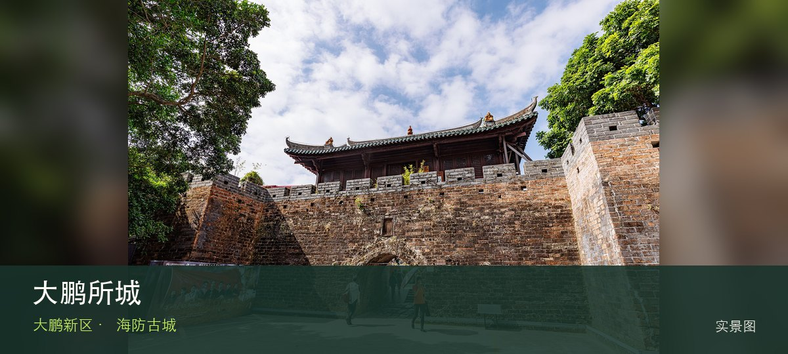

适合谁
适合建筑、地方史和社区观察者；参观时须尊重居民、宗教礼仪与生产秩序。

SHENZHEN GUIDE · 278
大鹏街道 · 海防古城
大鹏所城位于大鹏街道鹏城社区，明清海防城门、将军第、街巷和仍在生活的社区共同保存深圳东部军事与移民史，博物馆只是其中一部分。与同类地点相比，最值得停下来的差异落在南门与海防城格局和赖恩爵振威将军第这两个具体节点上。阅读这处地点要把南门与海防城格局与赖恩爵振威将军第放回仍在使用的街巷或社区中，不把历史空间当成布景。先看公开区域，再按居民生活、礼仪和开放边界调整停留，不进入封闭建筑。
WHY GO
适合建筑、地方史和社区观察者；参观时须尊重居民、宗教礼仪与生产秩序。
从南门建立城防格局，再选一座公开宅第或博物馆细看；较场尾只作为后续可选，不挤占所城历史线。
公共交通先到大鹏街道鹏城社区片区，再以大鹏所城公开参观入口为终点；多入口地点须按计划游线选择入口，并预先锁定返程站点。
自驾停在所城外围正规公共停车场后步行入城；节假日先查大鹏交通预约与管制，不驶入鹏城社区窄巷。
10 月至次年 4 月步行较舒适；夏季避开正午，雨天留意石板、台阶和老建筑周边湿滑。
NEARBY IDEAS